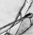

TEŞEKKÜR

BU KİTABIN YAZIMINDA bize esin kaynağı olan hastalara ve akıl hocalarına, ayrıca enerjisi ve bilgisiyle katkılar sağlayan, Rachel Champeau, Dr Michela Gunn, Dr Jeff Gandin, Melinda Gandin, Diş Hekimi Robert Gandin, Dr Jonathan Hiatt, Ph.D. Shirley Impellizeri, Don Siegel ve Dr, Ph.D, Lawrance Warick de dâhil, tüm dost ve meslektaşlarımıza teşekkür etmek isteriz.
Uzun süredir editörümüz ve dostumuz olan Mary Ellen O’Neill ile sevgili dostumuz ve edebiyat mümessilimiz Sandra Dikstra’nın desteği ve katkısı olmadan bu kitap mümkün olamazdı. Ayrıca çocuklarımız Rachel ve Harry’e, anne babalarımız Dr Max ve Gertrude Small’a, Rose Vorgan ve Fred Weiss’a da sevgi ve teşvikleri için teşekkür etmek istiyoruz.
DR GARY SMALL
GIGI VORGAN